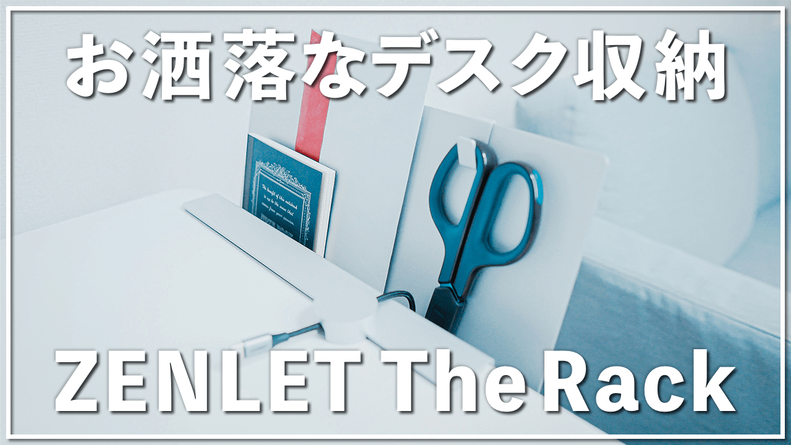

About
だっち/KouheiHonda
1992年生まれ28歳。現在は自動車メーカーにてサスペンション機構設計を担当。趣味でYouTubeにて自分が使って良かった「モノ・サービス」を紹介しており、現在チャンネル登録者5000人↑、総再生回数120万回↑。2020年10月より、Webデザイン・プログラミングを学習中。学生時代、「社交ダンス」の九州チャンピオンという異例な経歴も…。
Works
YouTubePR

「適切に伝える」をモットーに、ガジェット・雑貨製品を、累計5本以上のPR動画制作を行っています。詳しい実績については以下「READ MORE」よりご確認下さい。
VideoProduction

主に社交ダンスのジャンルを中心に映像制作を行っています。社交ダンス経験者・YouTuber、それぞれの視点から映像制作だけでなく、YouTubeチャンネル運営のアドバイスも行っています。